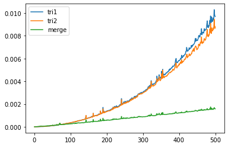

etude comparée algos de tri
Etude comparée des algorithmes de tri
Explorer le sujet
Les algorithmes de tri sont vus à la page: rappels sur les algorithmes de tri
Le projet a pour but de faire une étude comparée des 3 algorithmes de tri: insertion, selection et fusion, pour différentes listes d’entiers non rangés.
Le temps de calcul de chaque algorithme dépend de sa complexité. Le graphique suivant (taille de la liste triée en abscisses, temps de calcul en ordonnée), permet ainsi comparer ces différents algorithmes.

comparaison des temps de calculs pour différents algorithmes de tri
Vous allez réaliser un programme Python qui permettra de comparer les 3 principaux algorithmes de tri à l’aide d’un graphique. Vous vérifierez ensuite par une étude mathematique si la complexité de chaque algorithme correspond à la courbe obtenue.
Aides pour la réalisation du projet
Tracé de courbe de type nuage de points
Le script suivant permet de tracer plusieurs nuages de points sur le même graphique.
Modélisation
Le script suivant permet de modéliser une courbe à partir de ses points. Le programme permet d’obtenir les coefficients pour un modèle mathématique donné.
On peut alors tracer la courbe y_model avec celle de y1 et juger de la qualité de la modélisation.
Mesure du temps
Pour mesurer un temps à un moment précis du programme, on utilise la fonction time du module time.
Pour obtenir la documentation de cette fonction, dans une console Python, faites:
Rappel: pour mesurer une durée, il faut faire $t=t_2 - t_1$
Créer une liste non ordonnée de valeurs
Pour mélanger une liste L0, utiliser la fonction shuffle du module random:
Copie par valeur d’une liste
Suggestion de projets
L’efficacité d’un algorithme vient aussi de la nature de la liste à trier. Il peut être intéressant de mesurer la durée de tri pour certaines formes de listes particulières (déjà triée, triée en sens inverse, avec des doublons, …).
Quel sera l’algorithme le plus efficace, le plus inéfficace?
Le programme pourrait décider alors du meilleur algorithme en fonction de la nature de la liste.